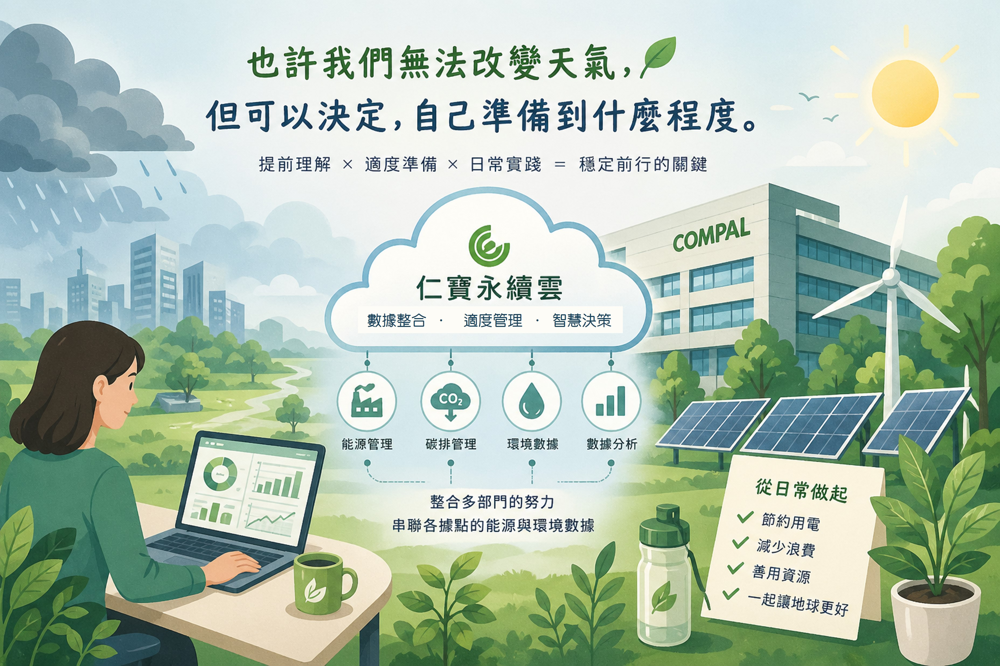

從日常開始，打造更穩定的未來
永續發展辦公室
 |
你有沒有發現，最近天氣越來越極端？一下暴雨、一下高溫，好像一年比一年更難預測。原本只是新聞裡的事情，但慢慢地，這些變化開始出現在我們的日常生活中。
這些改變看起來離工作很遠，但其實每天都在影響企業的運作。像是突如其來的大雨，可能影響交通或出貨時程；長時間高溫，也可能讓設備效率下降，甚至影響工作環境的舒適度。當這些狀況發生的頻率越來越高，就不再只是偶發事件，而是需要被納入管理與思考的一部分。
因此，現在越來越多企業開始把「氣候」當成日常管理的一環，而不只是環保議題。與其等問題發生後再應對，不如提前思考：
如果未來氣候變得更不穩定，我們可以怎麼降低影響？
在公司內部，這樣的工作其實已經持續進行多年。ESG Office 會定期盤點各據點的能源使用與環境相關數據，並透過情境分析，協助了解極端天氣可能帶來的影響，讓相關單位在規劃營運時，有更多可以參考的資訊。同時，也持續推動節能措施與再生能源的使用，從日常營運中降低環境帶來的不確定性。
為了讓這些資訊更有效被運用，公司也逐步導入數位化管理方式。「仁寶永續雲」即為公司自主研發的平台，整合多個部門的共同努力，將各據點的能源與環境數據進行串聯與整理。過去需要分別蒐集的資料，現在可以更即時地被掌握，也讓不同單位在查看資訊時，有更一致的基礎與理解。透過這個平台，資料不再只是數字的呈現，而是可以被轉化為日常管理與決策的參考依據，讓整體運作更順暢。
也許我們也可以從一個簡單的問題開始思考：「在日常工作中，有沒有哪一個小習慣，可以讓資源被更有效地使用？」
當這樣的想法慢慢累積，也會成為改變的一部分。
也許我們無法改變天氣，但可以決定，自己準備到什麼程度。